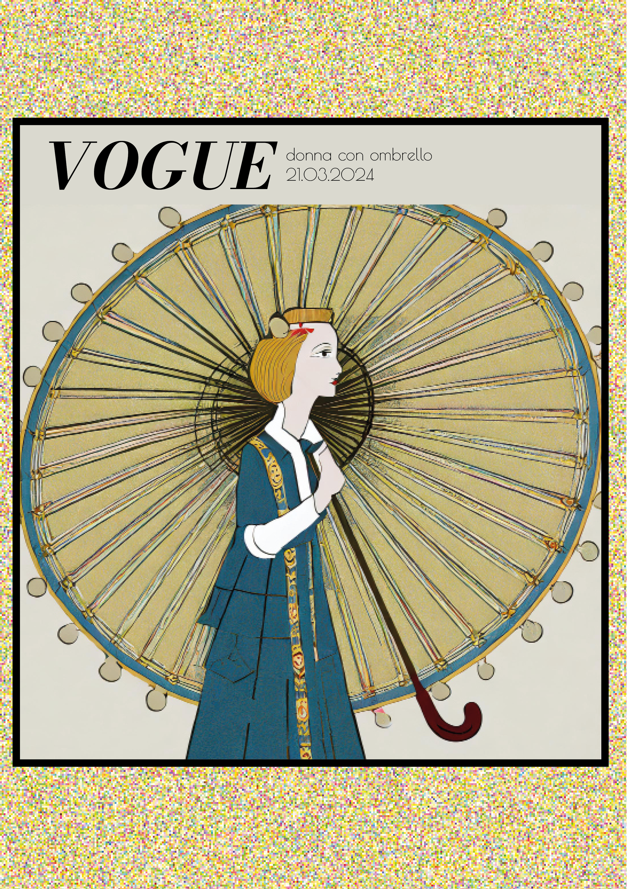

Magasindesign
Mitt eget magasin – fra idé til ferdig design

Om prosjektet
Jeg har designet mitt eget magasin, Bedford Magazine. Arbeidet utforsker redaksjonell layout gjennom typografi, bildebruk, komposisjon og en tydelig visuell stil.
Fontene som er brukt i magasindesignet, er Bodoni Moda og Poiret One.